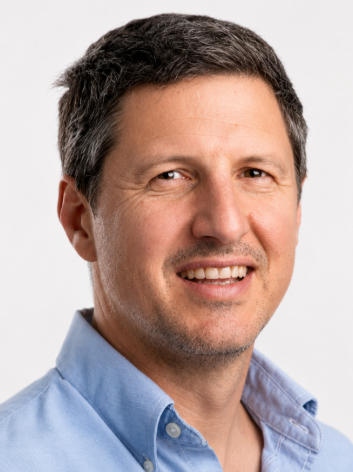
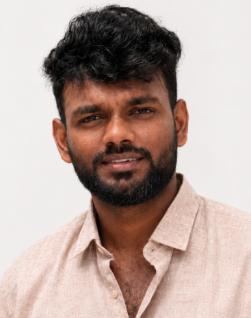

Daniel received his diploma in Chemistry in 2008 under the supervision of Prof. Bernhard Breit at the University of Freiburg (Germany). In 2012, he obtained his Ph.D. in Chemistry from the University of Geneva under the supervision of Prof. Alexandre Alexakis. As a Swiss National Science Foundation (SNSF) fellow, he carried out postdoctoral research with Prof. Larry E. Overman at the University of California, Irvine (USA). In 2014, he joined Prof. Ilan Marek's group at the Technion (Haifa, Israel). In 2016, he moved to Rennes (France) for postdoctoral research with Dr. Marc Mauduit at the École Nationale Supérieure de Chimie de Rennes (ENSCR), where he remained until 2019. Since 2020, he has been a CNRS researcher at the Institute of Chemical Sciences of Rennes (ISCR), France.

Ph.D. Candidate (since October 2026)
Ruveen completed his Bachelor's degree in Chemistry at Parvatibai Chowgule College of Arts and Science, Goa, India, in 2023. He subsequently joined the Indian Institute of Science Education and Research (IISER) Thiruvananthapuram, India, to pursue a Master of Science by Research in Chemistry. During his master's studies, he conducted research under the supervision of Dr. Veera Reddy Yatham, completing his degree in 2026. In October 2026, Ruveen joined the Institute of Chemical Sciences of Rennes (ISCR), CNRS, University of Rennes, France, as a Ph.D. candidate under the supervision of Dr. Daniel S.Müller. His doctoral research focuses on the development of new methods in synthetic organic chemistry.
I welcome inquiries from highly motivated prospective Ph.D. students and postdoctoral researchers interested in joining the group. I am happy to discuss research projects, advise applicants on identifying suitable funding opportunities, and support competitive fellowship and grant applications. This includes Marie Skłodowska-Curie Actions (MSCA), international scholarship programmes, and national doctoral fellowships, including dedicated funding opportunities for applicants with disabilities.
Master 2 (M2) research projects are also available in the group. Projects can start between January and March 2027, with January being the preferred starting date. Interested students are encouraged to get in touch well in advance.